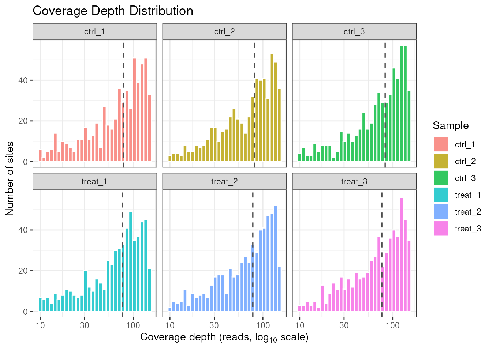
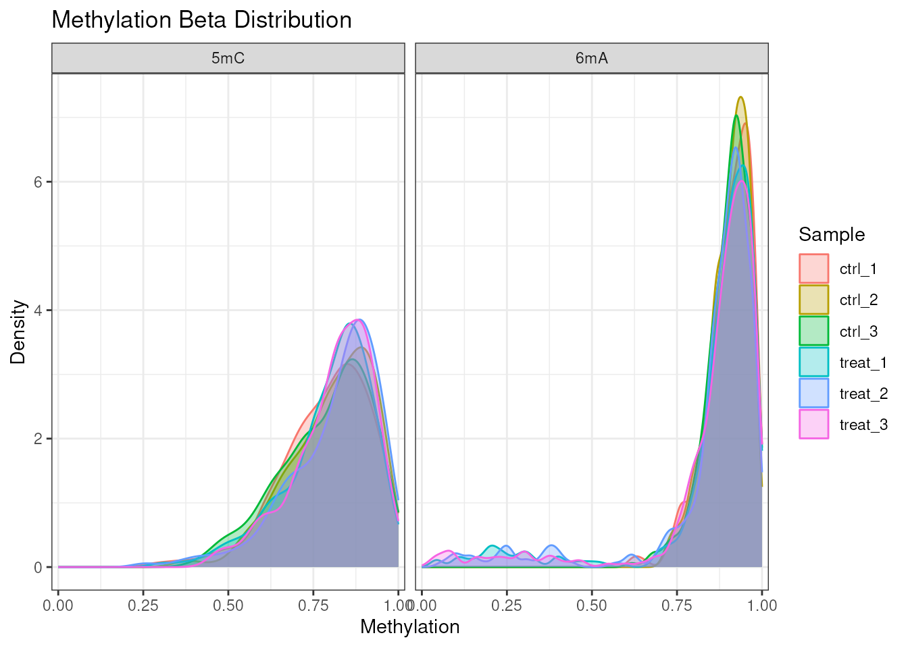
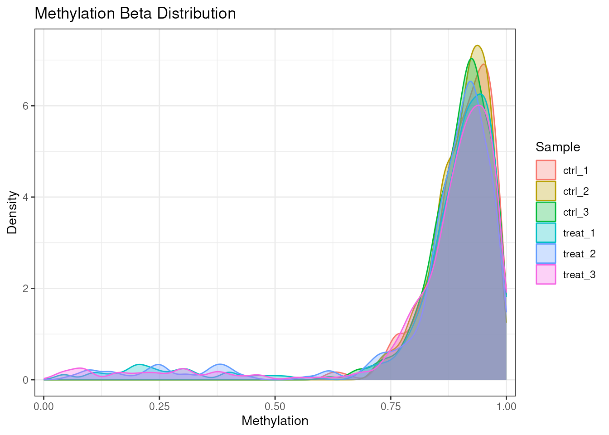
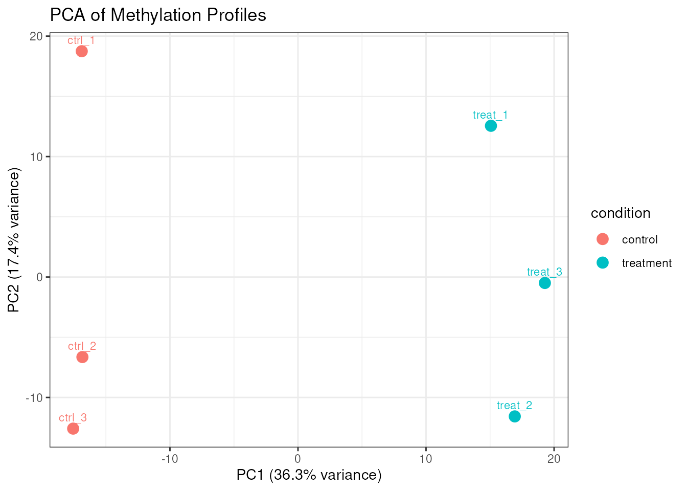
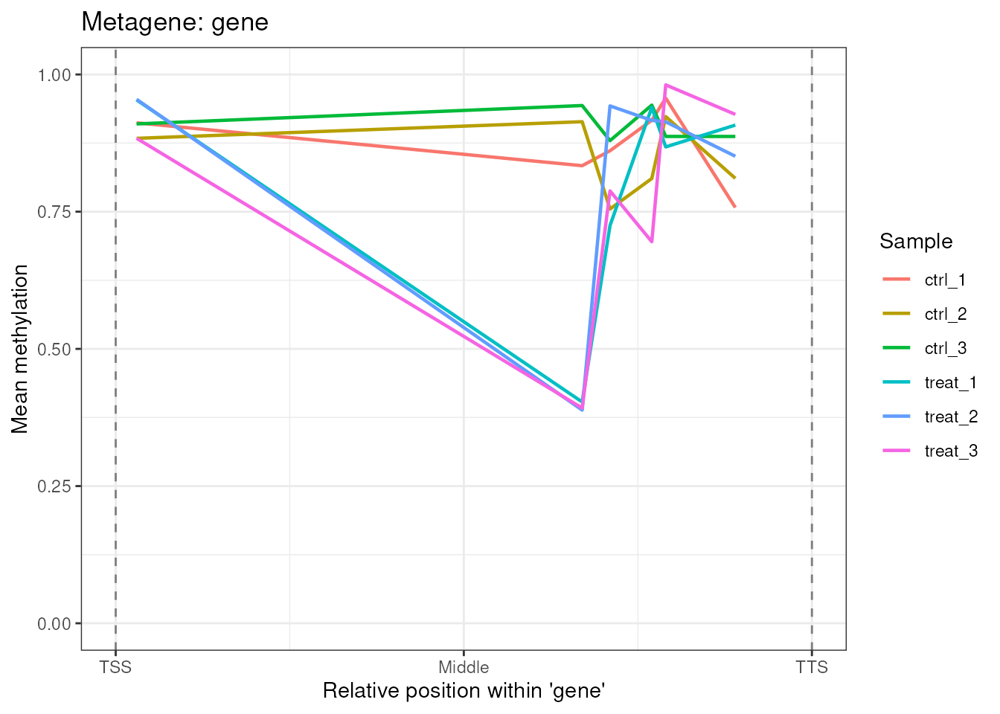
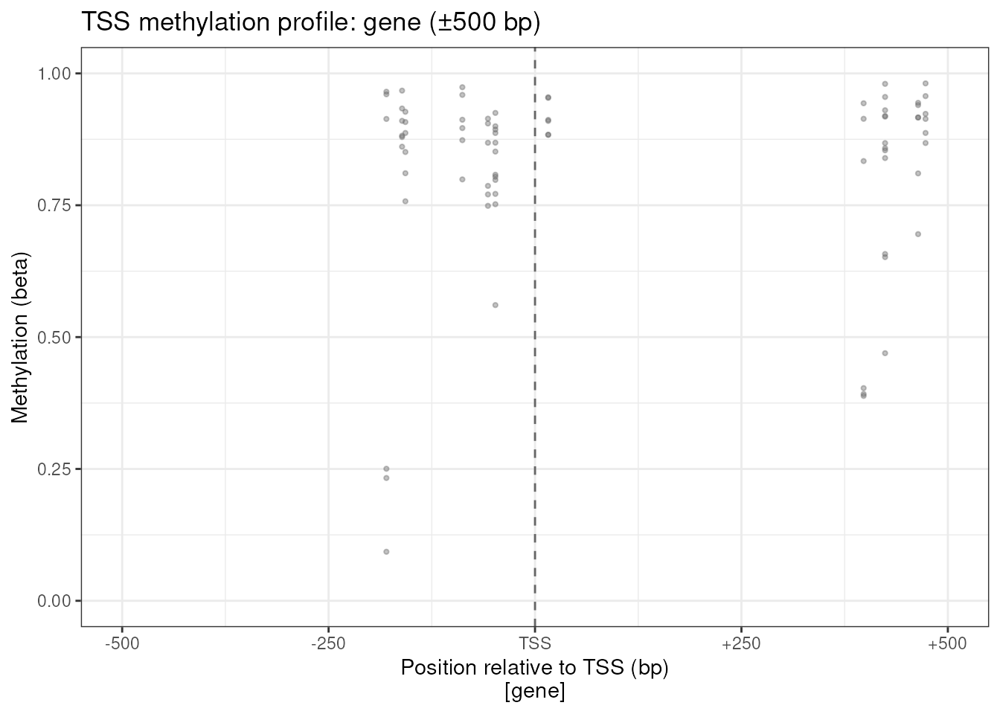
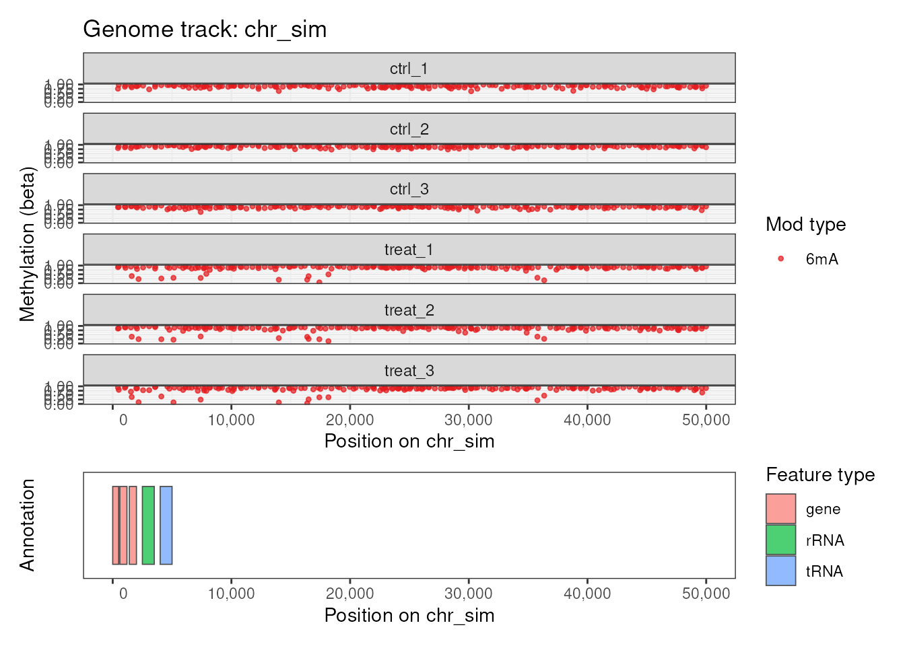
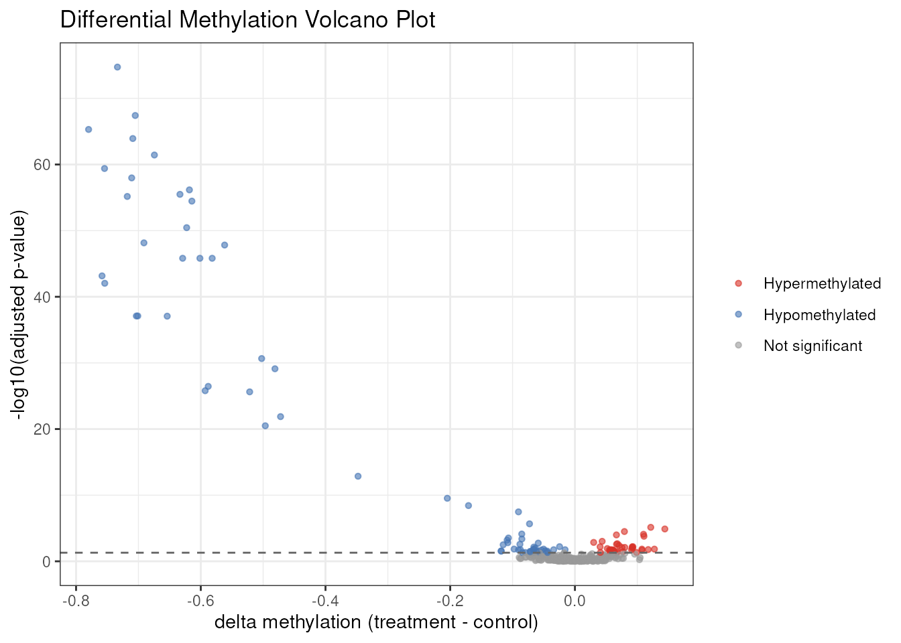
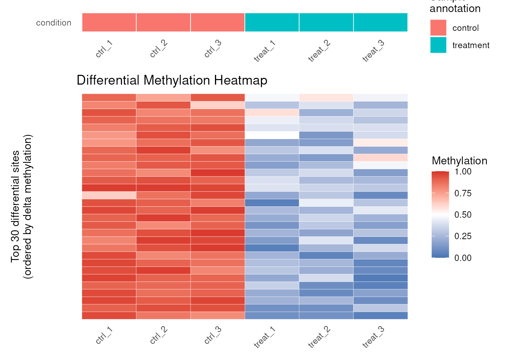

Introduction
commaKit (Comparative
Microbial Methylomics
Analysis Kit) is an R package for
genome-wide analysis of bacterial DNA methylation from Oxford Nanopore
sequencing data. It supports three modification types — N6-methyladenine
(6mA), 5-methylcytosine (5mC), and N4-methylcytosine (4mC) — in a
single, unified data container. This vignette walks through the complete
analysis workflow using the built-in comma_example_data
synthetic dataset.
The typical commaKit workflow has six steps:
-
Load per-sample methylation files into a
commaDataobject. - QC the data (coverage, beta distributions, PCA).
- Annotate sites relative to genomic features.
- Test for differential methylation between conditions.
- Visualize the results.
- Enrich differentially methylated genes (GO/KEGG).
Installation
devtools::install_github("carl-stone/commaKit")
# BiocManager::install("commaKit") after Bioconductor releaseThe commaData Object
commaData extends Bioconductor’s
RangedSummarizedExperiment and is the central data
container in commaKit. It stores:
- methylation — a sites × samples matrix of beta values (0–1).
- siteCoverage — a sites × samples matrix of read depths.
-
rowRanges — one 1-bp
GRangesrange per methylation site, withmod_typeandmotifmetadata. -
mod_context — computed on demand from
mod_typeandmotifbymodContexts()andsiteInfo(). - colData — per-sample metadata: sample_name, condition, replicate.
- Seqinfo — chromosome names, lengths, and circularity metadata.
-
annotation — genomic features as a
GRangesobject inmetadata(). -
motifSites — motif instances as a
GRangesobject inmetadata().
The built-in comma_example_data contains 588 synthetic
methylation sites (393 × 6mA, 195 × 5mC) on a simulated 100 kb
chromosome across six samples: three controls (ctrl_1,
ctrl_2, ctrl_3) and three treatments
(treat_1, treat_2, treat_3).
data(comma_example_data)
comma_example_data
#> class: commaData
#> sites: 588 | samples: 6
#> mod types: 5mC, 6mA
#> motifs: CCWGG, GATC
#> mod contexts: 5mC_CCWGG, 6mA_GATC
#> conditions: control, treatment
#> genome: 1 chromosome (100,000 bp total)
#> annotation: 5 features
#> motif sites: none
#> min_coverage: 5
# Modification types present
modTypes(comma_example_data)
#> [1] "5mC" "6mA"
# Modification contexts (combines mod_type and motif)
modContexts(comma_example_data)
#> [1] "5mC_CCWGG" "6mA_GATC"
# Per-sample metadata
sampleInfo(comma_example_data)
#> sample_name condition replicate
#> ctrl_1 ctrl_1 control 1
#> ctrl_2 ctrl_2 control 2
#> ctrl_3 ctrl_3 control 3
#> treat_1 treat_1 treatment 1
#> treat_2 treat_2 treatment 2
#> treat_3 treat_3 treatment 3
# Matrix dimensions: sites × samples
dim(methylation(comma_example_data))
#> [1] 588 6Exploring the Methylome
Summary Statistics
methylomeSummary() returns a tidy data frame with
per-sample distribution statistics:
ms <- methylomeSummary(comma_example_data)
ms[, c("sample_name", "condition", "mean_beta", "median_beta", "n_covered")]
#> sample_name condition mean_beta median_beta n_covered
#> 1 ctrl_1 control 0.8654839 0.8929141 588
#> 2 ctrl_2 control 0.8705692 0.8959600 588
#> 3 ctrl_3 control 0.8638033 0.8918851 588
#> 4 treat_1 treatment 0.8357998 0.8864176 588
#> 5 treat_2 treatment 0.8369054 0.8893089 588
#> 6 treat_3 treatment 0.8388398 0.8866568 588Coverage QC
plot_coverage() shows the distribution of sequencing
depth per site, per sample. Consistent coverage across samples is an
important quality indicator.
plot_coverage(comma_example_data)
Coverage depth distribution per sample.
Beta Value Distributions
plot_methylation_distribution() plots the density of
methylation levels for each sample. Bacterial genomes often show a
bimodal distribution (sites are either fully methylated or
unmethylated).
plot_methylation_distribution(comma_example_data)
Methylation beta value density per sample, faceted by modification type.
Restrict to a single modification type:
plot_methylation_distribution(comma_example_data, mod_type = "6mA")
Beta value density for 6mA sites only.
PCA for Sample-Level QC
plot_pca() performs PCA on per-sample methylation
profiles. Samples from the same condition should cluster together.
Internally, beta values are converted to M-values via
mValues() before PCA, which stabilizes variance across
sites near 0 or 1.
plot_pca(comma_example_data, color_by = "condition")
PCA of methylation profiles colored by condition.
To retrieve the underlying scores for custom plotting, use
return_data = TRUE. The result is a data.frame
with PC1, PC2, and all sample metadata
columns; the percentage of variance explained by each PC is stored in
attr(result, "percentVar").
Annotating Sites
annotateSites() maps methylation sites to genomic
features, always computing four parallel list columns in
rowData:
-
feature_types— GFF3 feature type for each association (e.g.,"gene","promoter"). -
feature_names— feature name for each association. -
rel_position— signed distance from the feature (0 = inside; negative = upstream; positive = downstream, strand-aware). -
frac_position— normalized position within the feature ([0, 1];NAfor sites outside).
Use the keep argument to filter which associations are
retained: "all" (default), "overlap" (only
overlapping features), "proximity" (retains
rel_position, drops frac_position), or
"metagene" (only overlapping features with
frac_position).
annotated <- annotateSites(comma_example_data)
si <- siteInfo(annotated)
# Proportion of sites overlapping at least one annotated feature
mean(lengths(si$feature_names) > 0)
#> [1] 0.03401361plot_metagene() visualizes the average methylation
profile across gene bodies:
plot_metagene(comma_example_data, feature = "gene")
Mean methylation profile across gene bodies (TSS to TTS).
TSS-Centered Profiles
plot_tss_profile() shows methylation centered on
transcription start sites, with optional regulatory element
coloring:
plot_tss_profile(comma_example_data, feature_type = "gene")
TSS-centered methylation profile.
Genome Track Visualization
plot_genome_track() produces a genome browser–style plot
of methylation along a chromosome region:
plot_genome_track(comma_example_data,
chromosome = "chr_sim",
start = 1L, end = 50000L, mod_type = "6mA"
)
Genome track for the first 50 kb of chr_sim.
Differential Methylation
diffMethyl() tests each site for differential
methylation between conditions. For v1, pass a one-sided formula with
exactly one two-level comparison variable, such as
~ condition. Multi-factor formulas
(~ condition + batch), interactions, offsets, and
continuous covariates are not interpreted yet; run one two-group
comparison per diffMethyl() call. The result is the same
object with statistical results in rowData and in the
active result layer.
cd_dm <- diffMethyl(comma_example_data,
formula = ~condition,
mod_type = "6mA"
)
cd_dm
#> class: commaData
#> sites: 588 | samples: 6
#> mod types: 5mC, 6mA
#> motifs: CCWGG, GATC
#> mod contexts: 5mC_CCWGG, 6mA_GATC
#> conditions: control, treatment
#> genome: 1 chromosome (100,000 bp total)
#> annotation: 5 features
#> motif sites: none
#> min_coverage: 5Choosing a Differential Methylation Backend
diffMethyl() keeps method = "methylkit" as
the default for compatibility with established methylKit workflows and
its logistic-regression conventions. This is a sensible choice when you
already use methylKit elsewhere or want results that use methylKit’s
differential methylation model. commaKit still stores methylKit raw
p-values as dm_pvalue, computes dm_padj with
its genome-wide adjustment across the full diffMethyl()
call, and keeps methylKit q-values separately as
dm_methylkit_qvalue.
method = "quasi_f" is a good general-purpose alternative
for bacterial methylomes. It uses a quasibinomial model with empirical
Bayes dispersion shrinkage and can be a practical first alternative when
methylKit convergence warnings, zero-variance sites, or runtime become
distracting.
method = "limma" uses limma’s empirical-Bayes linear
model on M-values. It is most useful when you want a familiar limma
workflow on complete data, especially with only a few replicates per
group. All three backends report dm_delta_beta on the
original beta scale, so effect sizes remain comparable even when
p-values differ.
Extract the results as a tidy data frame:
layers <- resultLayers(cd_dm)
layers[, setdiff(colnames(layers), "timestamp")]
#> DataFrame with 1 row and 17 columns
#> name role type source is_default
#> <character> <character> <character> <character> <logical>
#> 1 diffMethyl diffMethyl differential_methyla.. diffMethyl TRUE
#> method formula reference treatment mod_context
#> <character> <character> <character> <character> <CharacterList>
#> 1 methylkit ~condition control treatment
#> mod_type motif p_adjust_method min_coverage alpha
#> <CharacterList> <CharacterList> <character> <integer> <numeric>
#> 1 6mA BH 5 0.5
#> result_cols package_version
#> <CharacterList> <character>
#> 1 dm_pvalue,dm_padj,dm_methylkit_qvalue,... 0.2.0
res <- results(cd_dm)
# Top sites by adjusted p-value
head(res[
order(res$dm_padj),
c("chrom", "position", "mod_type", "dm_delta_beta", "dm_padj")
])
#> chrom position mod_type dm_delta_beta dm_padj
#> 196 chr_sim 50176 6mA -0.7336497 1.849154e-75
#> 287 chr_sim 70003 6mA -0.7050844 3.896483e-68
#> 260 chr_sim 63550 6mA -0.7799241 5.006897e-66
#> 249 chr_sim 61440 6mA -0.7090099 1.178364e-64
#> 347 chr_sim 86016 6mA -0.6743832 3.661541e-62
#> 9 chr_sim 2180 6mA -0.7543758 4.024452e-60Filter to significant sites (padj < 0.05, |Δβ| ≥ 0.2):
sig <- filterResults(cd_dm, padj = 0.05, delta_beta = 0.2)
cat("Significant sites:", nrow(sig), "\n")
#> Significant sites: 31Volcano Plot
plot_volcano() displays the differential methylation
landscape. Sites are colored by direction and significance:
plot_volcano(res)
Volcano plot: effect size (Δβ) vs. significance (–log10 padj).
Heatmap of Top Sites
plot_heatmap() shows methylation beta values for the top
differentially methylated sites:
plot_heatmap(res, cd_dm, n_sites = 30L)
Heatmap of top 30 differentially methylated 6mA sites.
Enrichment Analysis
enrichMethylation() performs gene set enrichment on
differentially methylated genes. It supports Gene Ontology (GO) and KEGG
ontologies, over-representation analysis (ORA) and gene set enrichment
analysis (GSEA) methods, and distinguishes between target genes (where
DM sites overlap gene bodies) and regulator genes (whose products bind
near DM sites).
GO Enrichment
Before running enrichment, sites must be annotated with
annotateSites():
cd_dm <- annotateSites(cd_dm, keep = "overlap")Run GO enrichment on target genes — genes whose bodies overlap differentially methylated sites:
# GO Biological Process enrichment on target genes
enr <- enrichMethylation(cd_dm, ont = "BP", gene_role = "target")
# Access results
enr$goGene Role Semantics
The gene_role argument controls how genes are
classified:
-
"target"— genes whose bodies overlap DM sites. The background universe is all genes in the annotation. -
"regulator"— genes whose products (e.g., transcription factors) bind near DM sites. The background universe is only regulators of that type. -
"both"— runs both analyses separately and returns a named list.
KEGG Enrichment (Offline Path)
The KEGG REST API has rate limits. To avoid hitting them, build the term-to-gene mapping offline and cache it:
# Build KEGG term2gene mapping (2 API calls, cache to RDS)
kegg_t2g <- buildKEGGTermGene("eco", file = "kegg_eco.rds")
# Build gene ID map: symbol <-> KEGG ID (1 API call)
id_map <- buildKEGGGeneIDMap("eco",
OrgDb = org.EcK12.eg.db::org.EcK12.eg.db
)
# Run KEGG enrichment with offline mapping
enr_kegg <- enrichMethylation(cd_dm,
kegg_term2gene = kegg_t2g$term2gene,
kegg_term2name = kegg_t2g$term2name,
gene_role = "target"
)
enr_kegg$keggGSEA Mode
When you want to rank all genes by their methylation score rather than using a hard threshold, use GSEA:
enr_gsea <- enrichMethylation(cd_dm,
method = "gsea",
ont = "BP", gene_role = "target"
)Session Information
sessionInfo()
#> R version 4.5.2 (2025-10-31)
#> Platform: x86_64-pc-linux-gnu
#> Running under: Ubuntu 24.04.3 LTS
#>
#> Matrix products: default
#> BLAS: /usr/lib/x86_64-linux-gnu/openblas-pthread/libblas.so.3
#> LAPACK: /usr/lib/x86_64-linux-gnu/openblas-pthread/libopenblasp-r0.3.26.so; LAPACK version 3.12.0
#>
#> locale:
#> [1] LC_CTYPE=en_US.UTF-8 LC_NUMERIC=C
#> [3] LC_TIME=en_US.UTF-8 LC_COLLATE=en_US.UTF-8
#> [5] LC_MONETARY=en_US.UTF-8 LC_MESSAGES=en_US.UTF-8
#> [7] LC_PAPER=en_US.UTF-8 LC_NAME=C
#> [9] LC_ADDRESS=C LC_TELEPHONE=C
#> [11] LC_MEASUREMENT=en_US.UTF-8 LC_IDENTIFICATION=C
#>
#> time zone: Etc/UTC
#> tzcode source: system (glibc)
#>
#> attached base packages:
#> [1] stats graphics grDevices utils datasets methods base
#>
#> other attached packages:
#> [1] commaKit_0.2.0 BiocStyle_2.38.0
#>
#> loaded via a namespace (and not attached):
#> [1] bitops_1.0-9 rlang_1.3.0
#> [3] magrittr_2.0.5 otel_0.2.0
#> [5] matrixStats_1.5.0 compiler_4.5.2
#> [7] mgcv_1.9-4 systemfonts_1.3.2
#> [9] vctrs_0.7.3 reshape2_1.4.5
#> [11] stringr_1.6.0 pkgconfig_2.0.3
#> [13] crayon_1.5.3 fastmap_1.2.0
#> [15] XVector_0.50.0 labeling_0.4.3
#> [17] Rsamtools_2.26.0 rmarkdown_2.31
#> [19] UCSC.utils_1.6.1 ragg_1.5.2
#> [21] xfun_0.60 cachem_1.1.0
#> [23] cigarillo_1.0.0 GenomeInfoDb_1.46.2
#> [25] jsonlite_2.0.0 DelayedArray_0.36.1
#> [27] BiocParallel_1.44.0 parallel_4.5.2
#> [29] R6_2.6.1 bslib_0.11.0
#> [31] stringi_1.8.7 RColorBrewer_1.1-3
#> [33] limma_3.66.0 rtracklayer_1.70.1
#> [35] GenomicRanges_1.62.1 jquerylib_0.1.4
#> [37] numDeriv_2016.8-1.1 Rcpp_1.1.2
#> [39] Seqinfo_1.0.0 bookdown_0.47
#> [41] SummarizedExperiment_1.40.0 knitr_1.51
#> [43] zoo_1.8-15 R.utils_2.13.0
#> [45] IRanges_2.44.0 Matrix_1.7-4
#> [47] splines_4.5.2 tidyselect_1.2.1
#> [49] qvalue_2.42.0 abind_1.4-8
#> [51] yaml_2.3.12 codetools_0.2-20
#> [53] curl_7.1.0 lattice_0.22-7
#> [55] tibble_3.3.1 plyr_1.8.9
#> [57] Biobase_2.70.0 withr_3.0.3
#> [59] S7_0.2.2 coda_0.19-4.1
#> [61] evaluate_1.0.5 desc_1.4.3
#> [63] mclust_6.1.3 Biostrings_2.78.0
#> [65] pillar_1.11.1 BiocManager_1.30.27
#> [67] MatrixGenerics_1.22.0 stats4_4.5.2
#> [69] generics_0.1.4 RCurl_1.98-1.19
#> [71] emdbook_1.3.14 S4Vectors_0.48.1
#> [73] ggplot2_4.0.3 scales_1.4.0
#> [75] gtools_3.9.5 glue_1.8.1
#> [77] tools_4.5.2 BiocIO_1.20.0
#> [79] data.table_1.18.4 GenomicAlignments_1.46.0
#> [81] fs_2.1.0 mvtnorm_1.4-2
#> [83] XML_3.99-0.23 grid_4.5.2
#> [85] bbmle_1.0.25.1 bdsmatrix_1.3-7
#> [87] nlme_3.1-168 patchwork_1.3.2
#> [89] restfulr_0.0.17 cli_3.6.6
#> [91] textshaping_1.0.5 fastseg_1.56.0
#> [93] S4Arrays_1.10.1 methylKit_1.36.0
#> [95] dplyr_1.2.1 gtable_0.3.6
#> [97] R.methodsS3_1.8.2 sass_0.4.10
#> [99] digest_0.6.39 BiocGenerics_0.56.0
#> [101] SparseArray_1.10.10 rjson_0.2.23
#> [103] htmlwidgets_1.6.4 farver_2.1.2
#> [105] htmltools_0.5.9 pkgdown_2.2.1
#> [107] R.oo_1.27.1 lifecycle_1.0.5
#> [109] httr_1.4.8 statmod_1.5.2
#> [111] MASS_7.3-65